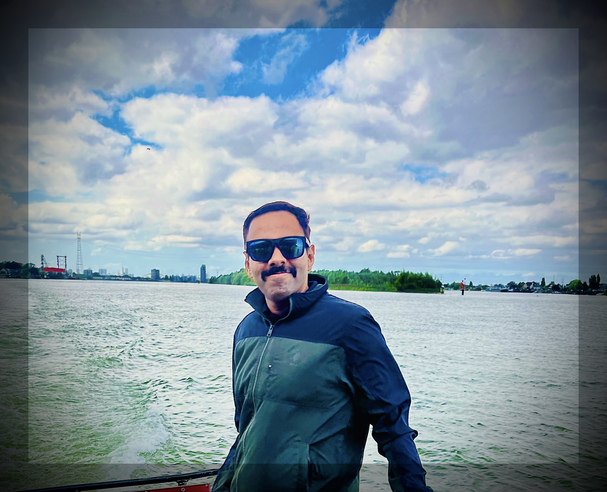

Sriram Ganapathy
Associate Professor
Department of Electrical Engineering
Indian Institute of Science, Bangalore, India
About
I am an Associate Professor at the Electrical Engineering Dept., Indian Institute of Science, Bangalore. My research interests are in signal processing, machine learning, deep learning and neuroscience. Our research focuses on multimodal large language models (LLMs) at scale for analysis, understanding and generation of multi-modal speech, text, and visual signals Before joining as a faculty member at the Indian Institute of Science, I spent 4 years as a Research Staff Member at the IBM T.J. Watson Research Center in Yorktown Heights, NY, USA. Between 2022-2024, I was a research scientist at Google DeepMind India, Bangalore. I completed my Ph.D. with Prof. Hynek Hermansky, at Center for Language and Speech Processing, Dept. of ECE, Johns Hopkins University, USA.
Co-lead AI-CoE
Starting from July 2026, I am full-time at the TANUH AI-Center-of-Excellence co-located in IISc. I function as the Co-Chief Project Manager, leading the activities on developing and deploying AI solutions and services for healthcare at the community and teritiary levels. I also head the Mental Health activities at the center.
Google DeepMind
I had the opportunity to spend 2+ years at Google DeepMind Bangalore as full-time faculty Research Scientist, working on the development and evaluation of Gemini series of models. In particular, I was honored to be involved in the successful development and launch of Gemini-2.5 (The report has more than 3k citations thus far!). During my rewarding time at Google, I was involved in efforts directed towards making multi-modal large-language models that are effective for Indian languages. I was working with the Languages group headed by Partha Talukdar.
Project Coswara
One of the most significant efforts undertaken in our lab during the COVID period was Project Coswara This project attempts the use of cough, speech and breathing sounds for cost-effective and contact-less testing of Covid-19 infection. Some details of the web-based data collection are illustrated in the recording link
Experience
Co-Chief Project Manager and Co-lead, Translational AI For Networked Universal Healthcare
Nominated to Editorial Board of Nature Scientific Data
My work and our lab's profile highlighted in the IISc Kernel article
LEAP team (Abhinaya) wins the fourth position at the Interspeech 2025 Emotion Recognition Challenge and unofficially achieves the SoTA for this task. Leaderboard
Completing tenure as research scientist at Google DeepMind India, Bangalore.
Contact
C334, Electrical Engineering, IISc
+91 80 2293 2433
sriramg at iisc dot ac dot in